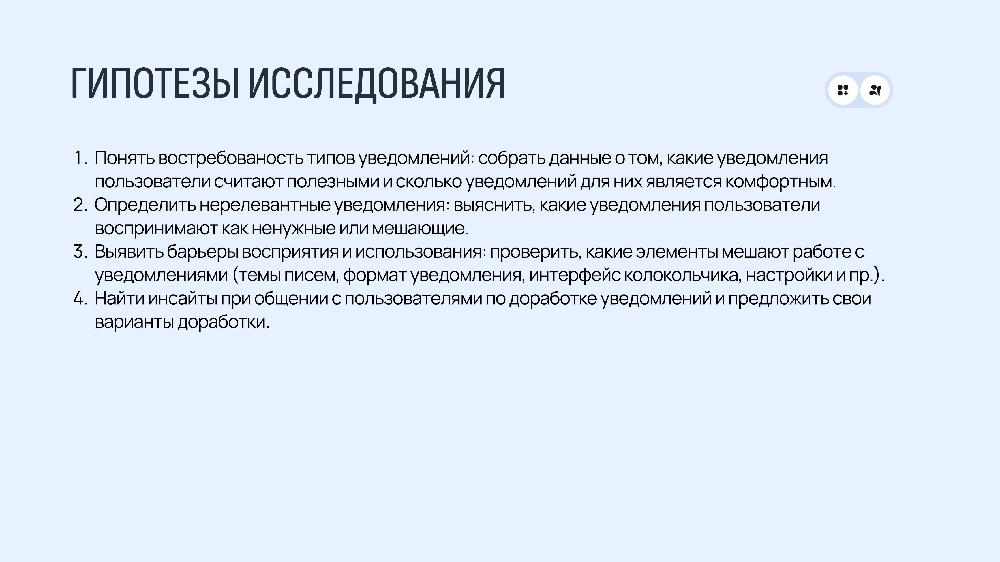

70% пользователей практически не открывают колокольчик уведомлений в самой Яге - и вот почему.

Опрос в Anketolog на выборку 1235 адресов - 140 ответивших пользователей «Яги» - плюс 6 модерируемых юзабилити-тестов с элементами интервью.
93% опрошенных читают уведомления именно в почте - привычнее, удобнее фильтровать поток, есть всплывающие окна о новых письмах. При этом раздел уведомлений («колокольчик») внутри самой Яги 70% практически не используют: 39% не заходят туда никогда, ещё 32% - раз в несколько месяцев, и лишь 8% пользуются регулярно.
Наиболее ценные уведомления - о статусах задачи (70,34%), о новых задачах (68,97%), о сроках (61,38%) и о комментариях/упоминаниях (62,07%). Наименее ценные - системные уведомления о собственных правках, смене исполнителя с себя на другого, истечении срока по уже закрытой задаче.
43% пользователей не против любого количества уведомлений, если они релевантны; но 33% начинают отключать канал при 4-7 уведомлениях в день, а 20% - уже после 1-3.
Письма воспринимаются как слишком общие и неинформативные - тема письма не говорит, что именно произошло, приходится открывать и вчитываться.
Вывод: релевантность важнее количества, но текущие письма недостаточно информативны. В доработку ушли: контекстные темы писем («[Комментарий] Иван упомянул вас в задаче №123» вместо общей формулировки), сгруппированные дайджесты вместо отдельных писем и приоритизация - важное сразу отдельным письмом, остальное в сводке.